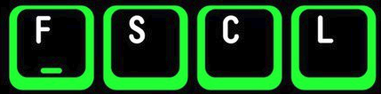
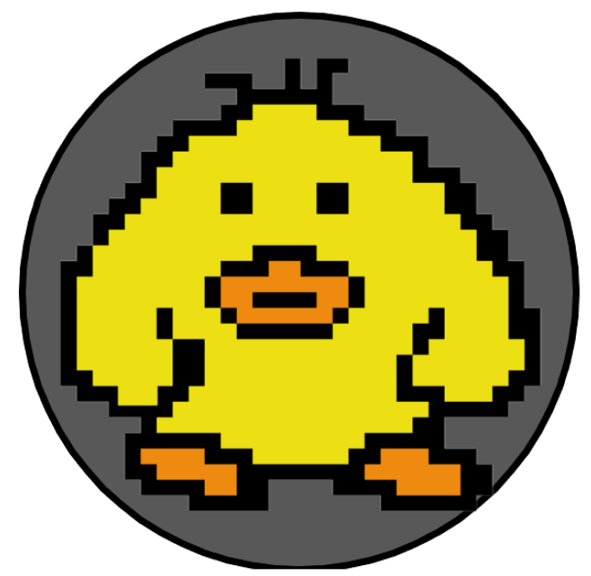
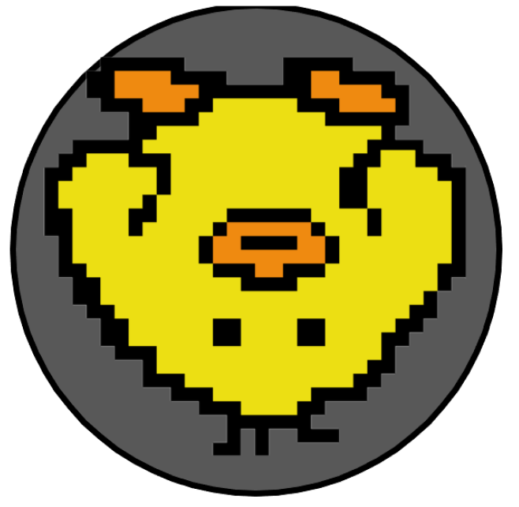
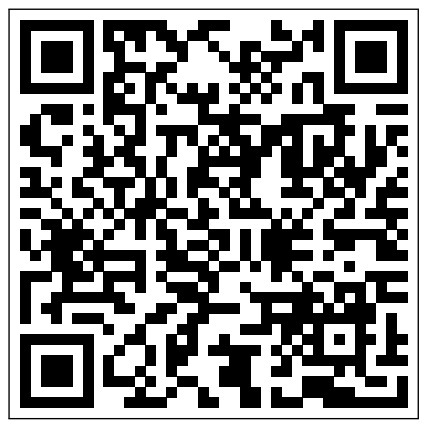
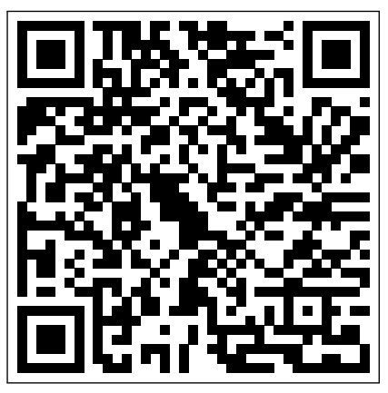

Fachschaft Computerlinguistik
 
Aktuelles
Rund ums Studium
CIS-Basics
Wir: Die CISschaft
Tools und Vorlagen
Archiv
Kontaktiere uns
>
Kontakt
Weitere Kanäle der Fachschaft:
Sanne die QR Codes...

follow us on facebook

join our newsletter
... oder klick auf die Links:
Facebook CISschaft
Stay tuned mit unserem Newsletter
Instagram
Für Fragen und interne Kommunikation existiert außerdem ein CIS-Discord-Server. Wenn du noch kein Mitglied bist, wende dich einfach mit deiner Campus-Mail an uns.
E-Mail:
Fachschaft intern:
fachschaft@cis.uni-muenchen.de
Studienberatung:
studienberatung@cis.uni-muenchen.de
Adresse:
Centrum für Informations- und Sprachverarbeitung
Ludwig-Maximilians-Universität
Oettingenstraße 67, 1. OG, Flügel C
80538 München
Technischer Kontakt:
Thomas Schäfer:
webmaster@cis.uni-muenchen.de